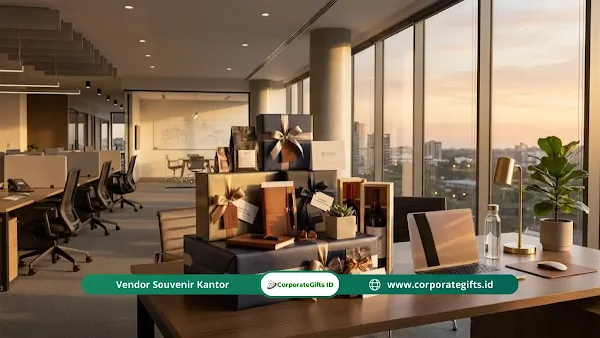

Corporate Gifts ID - Strategi doorprize bukber perusahaan yang efektif menggabungkan tiga pilar utama: integrasi gamifikasi interaktif untuk mencairkan sekat komunikasi, penyusunan rundown acara bertahap yang menjaga antusiasme peserta hingga akhir, serta kurasi pemilihan hadiah yang relevan dengan kebutuhan gaya hidup karyawan modern. Kombinasi ketiganya terbukti ampuh mengubah seremoni buka puasa bersama kantor dari sekadar rutinitas makan bersama tahunan menjadi momentum berharga untuk memperkuat ikatan budaya kerja dan kolaborasi tim yang solid.
Banyak praktisi Human Resources (HRD) dan panitia internal mengeluhkan fenomena klasik setiap bulan Ramadan: acara buka puasa bersama kantor sering kali terasa kaku, monoton, dan peserta cenderung terburu-buru ingin pulang sesaat setelah hidangan berbuka tandas. Padahal, agenda tahunan ini merupakan investasi strategis dengan alokasi anggaran yang cukup signifikan. Tanpa pengelolaan alur acara yang menyenangkan, potensi acara untuk merekatkan relasi kerja antar divisi akan terbuang sia-sia.
Di kawasan sentra bisnis dan perkantoran urban yang padat karya, kebutuhan refreshing bagi staf operasional maupun manajerial sangatlah tinggi. Oleh karena itu, pengadaan souvenir kantor dan doorprize bukber bukanlah sekadar seremonial bagi-bagi barang, melainkan alat manajemen keterlibatan (employee engagement tool) yang sangat berpengaruh terhadap loyalitas tim.
Poin Kunci Strategi Doorprize Bukber Perusahaan:
- Gamifikasi Dinamis: Mencairkan kekakuan hierarki formal lewat kompetisi trivia kantor, tantangan konten singkat Ramadan, dan kuis digital interaktif.
- Rundown Retensi Peserta: Menyebarkan pembagian hadiah ringan di sepanjang sesi dan menaruh hadiah utama di penghujung acara sebelum sesi foto penutup.
- Tukar Kado Silang Edukatif: Merangsang komunikasi lintas departemen melalui sistem kado anonim beranggaran terjangkau tanpa membebani keuangan peserta.
- Monetisasi Survei SDM: Meningkatkan tingkat pengisian kuesioner evaluasi karyawan tahunan dengan menjadikannya tiket undian doorprize instan.
- Kurasi Hadiah Fungsional: Memilih hadiah yang mendukung keseimbangan hidup kerja (work-life balance) seperti peralatan elektronik pintar, voucher belanja digital, dan hampers eksklusif.
Daftar Isi Artikel
- Mengapa Gamifikasi Efektif Mencairkan Suasana Bukber Kantor?
- Strategi Menyusun Rundown Acara Bukber Interaktif
- Trik Tukar Kado Antar Divisi yang Hemat Anggaran tapi Berkesan
- Mengemas Evaluasi Karyawan Menjadi Aktivitas Berhadiah Seru
- Komparasi Kategori Hadiah Doorprize Bukber Berdasarkan Karakter Tim
- Kriteria Memilih Hadiah Doorprize yang Tepat dan Bermakna
- Kesimpulan & Rekomendasi Pengadaan Doorprize Bukber
- Pertanyaan Seputar Strategi Doorprize Bukber (FAQ)
1. Mengapa Gamifikasi Efektif Mencairkan Suasana Bukber Kantor?
Permainan interaktif atau gamifikasi di sela-sela agenda bukber bukan sekadar pengisi waktu luang, melainkan instrumen psikologis untuk mendobrak kecanggungan komunikasi antar rekan kerja. Di lingkungan kantor, batasan jabatan dan sekat divisi sering kali membatasi percakapan santai. Dengan menyuntikkan elemen permainan yang kompetitif namun bersahabat, karyawan dari tingkatan staf hingga manajerial dapat berbaur dalam frekuensi emosional yang sama.
Beberapa konsep gamifikasi yang terbukti sukses menghidupkan suasana acara antara lain:
- Kuis Trivia Budaya Internal: Susun pertanyaan kuis berbasis aplikasi smartphone mengenai sejarah lucu perusahaan, kebiasaan khas para direksi, atau fakta unik fasilitas kantor. Momen ini hampir selalu memancing gelak tawa bersama.
- Tantangan Konten Singkat Ramadan: Bentuk kelompok lintas departemen secara acak dan beri waktu 10 menit untuk membuat video kreasi konten komedi atau pantun Ramadan. Tim paling kreatif langsung diberikan voucher instan.
- Doorprize Kejutan Kilat (Flash Quiz): Bagikan doorprize kategori ringan secara mendadak kepada karyawan yang mampu menjawab pertanyaan kilat pemandu acara (MC). Hal ini seketika menaikkan fokus perhatian seluruh ruangan.
- Misi Penyelarasan Visi Perusahaan: Selipkan tebak kata atau teka-teki bertema target korporat tahun berjalan, sehingga nilai-nilai perusahaan terserap secara organik tanpa kesan menggurui.
2. Strategi Menyusun Rundown Acara Bukber Interaktif
Kunci sukses keberhasilan acara buka bersama terletak pada ritme rundown. Sering kali panitia menghabiskan seluruh energi acara sebelum adzan maghrib berkumandang, lalu membiarkan acara bubar begitu saja setelah makan malam. Akibatnya, peserta bergegas pulang dan tujuan mempererat hubungan kerja tidak tercapai.
Panitia yang berpengalaman menerapkan prinsip progressive excitement (keseruan bertingkat). Jangan pernah membagikan seluruh hadiah di awal acara. Susunlah alur acara dengan pola taktis berikut:
- Pra-Buka (16.30 - 17.30): Sambutan pimpinan singkat (maksimal 7 menit), disusul ceramah santai bernuansa motivasi kerja, dan diakhiri dengan 1 sesi kuis pembuka berhadiah mini gift set.
- Waktu Berbuka & Sholat (17.35 - 18.30): Berikan jeda penuh tanpa gangguan mic agar peserta dapat menikmati santap takjil, melaksanakan sholat maghrib berjamaah, dan makan malam secara nyaman.
- Sesi Interaktif Inti (18.30 - 19.30): Mulai putaran permainan kelompok dan pengundian doorprize kategori menengah. Suasana di fase ini biasanya berada pada titik energi paling optimal.
- Puncak Doorprize Utama (19.30 - 20.00): Simpan pengundian hadiah grand prize (seperti smart TV, smartphone, atau emas batangan) di bagian penutup tepat sebelum doa bersama dan sesi foto bareng satu kantor. Taktik retensi ini menjamin seluruh kursi tetap terisi penuh hingga akhir acara.

Pengaturan susunan acara bertahap dan pembagian doorprize interaktif efektif menjaga antusiasme peserta bukber kantor hingga akhir.
3. Trik Tukar Kado Antar Divisi yang Hemat Anggaran tapi Berkesan
Perusahaan tidak selalu harus menanggung 100% biaya hadiah jika memiliki keterbatasan anggaran. Salah satu metode yang terbukti sangat digemari karyawan dan hemat biaya adalah tradisi tukar kado silang (cross-divisional gift exchange). Agar tidak terasa memberatkan kantong peserta, panitia harus menetapkan aturan main yang transparan:
- Batas Harga Wajar dan Seragam: Tetapkan batas nilai hadiah yang terjangkau, misalnya Rp35.000 hingga Rp50.000. Standarisasi harga ini mencegah kesenjangan sosial antar level staf dan pimpinan.
- Kemasan Anonim Tanpa Identitas: Wajibkan seluruh kado dibungkus dengan kertas koran atau kertas cokelat polos tanpa nama pengirim, hanya bertuliskan nomor lotre yang ditentukan saat registrasi kedatangan.
- Sistem Undian Silang Digital: Manfaatkan roda putar digital (spin wheel) yang mengunci aturan bahwa karyawan bagian IT hanya bisa mengambil kado milik staf Finance, HRD bertukar dengan Sales, dan seterusnya. Momen unboxing kado anonim ini dijamin memicu obrolan akrab lintas bidang.
- Hadiah Pelengkap dari Perusahaan: Sebagai bentuk apresiasi partisipasi, manajemen menyediakan bingkisan souvenir promosi kantor atau goodie bag kecil bagi setiap peserta yang membawa kado.
4. Mengemas Evaluasi Karyawan Menjadi Aktivitas Berhadiah Seru
Bagi tim HRD, mengumpulkan data survei kepuasan kerja (employee engagement survey) atau evaluasi program tahunan sering kali menjadi pekerjaan rumah yang melelahkan karena rendahnya partisipasi karyawan. Momentum buka puasa bersama dapat disulap menjadi kesempatan emas untuk merampungkan survei tersebut secara sukarela dalam waktu kurang dari 15 menit.
Caranya sangat praktis: letakkan QR Code survei singkat di setiap meja makan. Berikan instruksi bahwa bukti tangkapan layar (screenshot) halaman selesai survei berfungsi ganda sebagai nomor undian ekstra untuk memperebutkan doorprize kategori eksklusif. Dengan imbalan hadiah menarik seperti blender portabel atau saldo e-wallet, tingkat partisipasi pengisian kuesioner dapat melonjak hingga di atas 95% dalam hitungan menit.
5. Komparasi Kategori Hadiah Doorprize Bukber Berdasarkan Karakter Tim
Memilih hadiah doorprize tidak boleh asal murah atau sekadar membeli barang pasaran. Karyawan memiliki profil kebutuhan yang beragam tergantung demografi usia dan rutinitas kerjanya. Berikut tabel panduan kurasi hadiah doorprize bukber berdasarkan segmen profil karyawan:
| Kategori Doorprize | Contoh Pilihan Produk | Segmen Target Karyawan | Estimasi Biaya / Unit | Tingkat Dampak Retensi |
|---|---|---|---|---|
| Doorprize Hiburan Digital | Voucher Belanja E-Commerce, Saldo E-Wallet, Voucher Streaming | Karyawan Gen Z & Milenial, Staf Kreatif, Remote Worker | Rp50.000 - Rp200.000 | Sangat Tinggi (Praktis) |
| Work-Life Balance Home Kit | Air Fryer Mini, Humidifier Aromaterapi, Robot Vacuum Mini, Coffee Maker | Karyawan Berkeluarga, Tim Back-Office, Karyawan Tinggal Mandiri | Rp250.000 - Rp650.000 | Sangat Tinggi (Berkesan) |
| Gadget & Aksesori Produktivitas | TWS Wireless Earphone, Powerbank Fast Charging, Keyboard Nirkabel | Tim Sales Lapangan, Account Executive, Tenaga IT & Operasional | Rp150.000 - Rp450.000 | Tinggi (Mendukung Kerja) |
| Hampers Ramadan Premium | Gift Box Teh Herbal Artisan, Set Cangkir Keramik, Madu Premium & Kurma Ajwa | Manajer Divisi, Tim Senior, Rekanan Tamu Eksternal | Rp200.000 - Rp500.000 | Elegan & Bernilai Budaya |
| Grand Prize Puncak | Logam Mulia (Emas Batangan 1-2 gr), Smart TV 43 Inch, Sepeda Lipat | Seluruh Karyawan (Hadiah Utama Puncak Acara) | Rp1.500.000 - Rp4.000.000 | Klimaks Spektakuler |
6. Kriteria Memilih Hadiah Doorprize yang Tepat dan Bermakna
Agar anggaran perusahaan teralokasikan secara efisien tanpa ada barang yang berakhir sia-sia di gudang karyawan, tim pengadaan dan panitia perlu memperhatikan tiga prinsip utama dalam menyeleksi hadiah:
- Prinsip Relevansi Gaya Hidup: Hindari barang-barang dekoratif pasaran yang hanya menjadi pajangan pengumpul debu. Prioritaskan barang multifungsi yang langsung dapat digunakan sehari-hari, seperti peralatan dapur ringkas penunjang sahur atau perlengkapan elektronik kerja.
- Kualitas dan Garansi Resmi: Pastikan barang elektronik yang dijadikan doorprize memiliki garansi resmi distributor. Menerima hadiah yang cepat rusak hanya akan menurunkan citra profesional panitia dan manajemen di mata staf.
- Sentuhan Personal Branding Perusahaan: Untuk hadiah berupa perangkat seperti powerbank, tumbler stainless steel, atau gift set, pertimbangkan untuk menyematkan grafir laser logo perusahaan yang rapi dan elegan melalui vendor souvenir custom VIP berpengalaman.
7. Kesimpulan & Rekomendasi Pengadaan Doorprize Bukber
Menyelenggarakan acara buka puasa bersama kantor yang berkesan dan berdampak nyata tidak menuntut anggaran puluhan juta rupiah. Keberhasilan acara bertumpu pada kematangan strategi HRD dalam meramu gamifikasi interaktif, menyusun alur rundown yang dinamis, serta mengurasi pilihan doorprize yang benar-benar dirasakan manfaatnya oleh karyawan.
Ketika karyawan merasa dihargai dengan hadiah yang fungsional dan menikmati suasana kebersamaan yang hangat, loyalitas dan semangat kolaborasi tim akan tumbuh secara alamiah. Hal ini merupakan aset tak ternilai bagi produktivitas bisnis perusahaan sepanjang tahun.
Pertanyaan Seputar Strategi Doorprize Bukber (FAQ)

Ditulis oleh: Arinda Zakia
Senior Corporate Gifting SpecialistArinda memiliki pengalaman lebih dari 6 tahun dalam riset tren merchandise B2B, strategi employee reward korporat, dan penyusunan konsep doorprize interaktif untuk perusahaan multinasional dan instansi BUMN.
Lihat Profil Lengkap & Panduan Lainnya